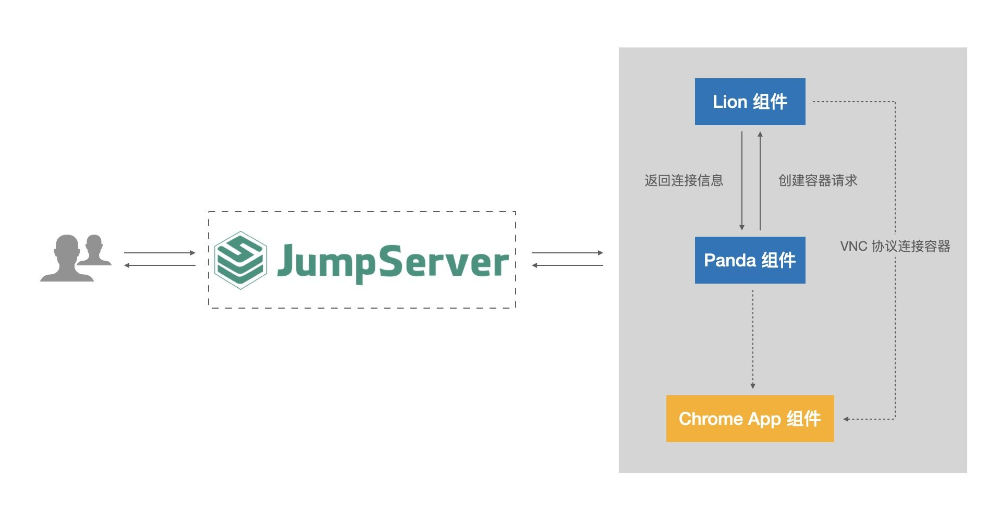
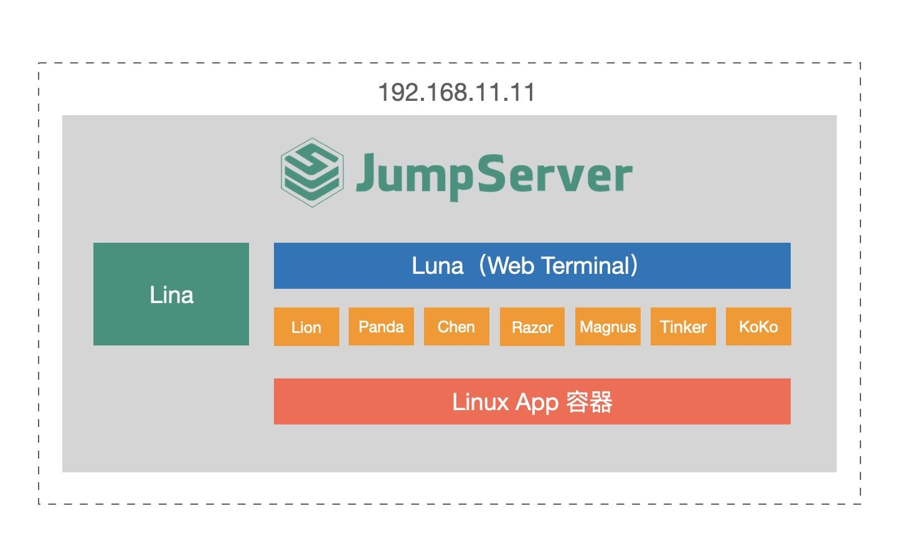
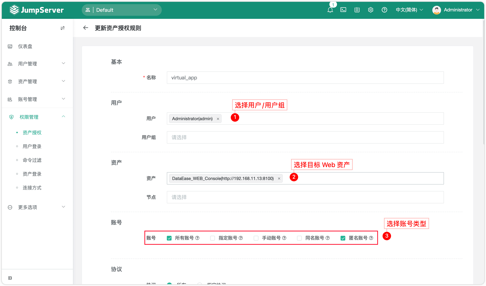
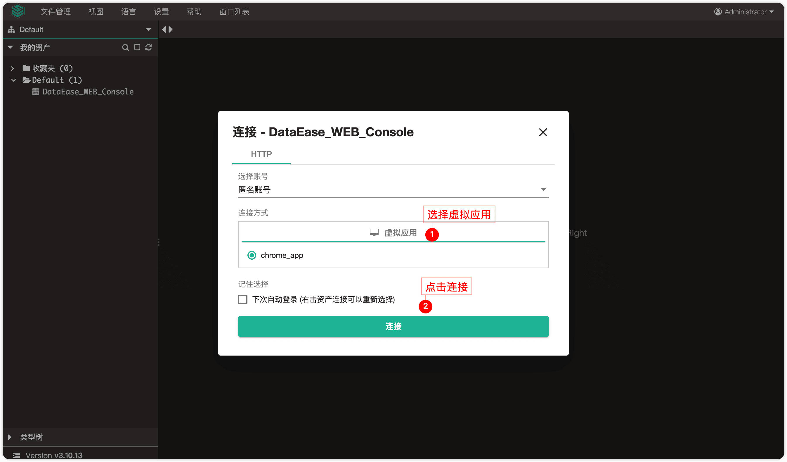
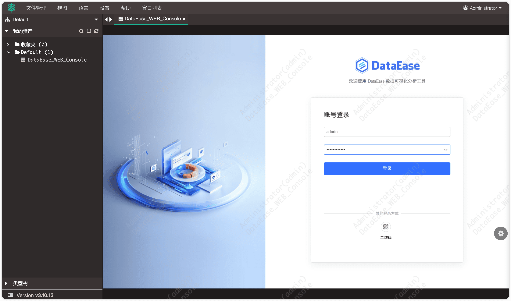
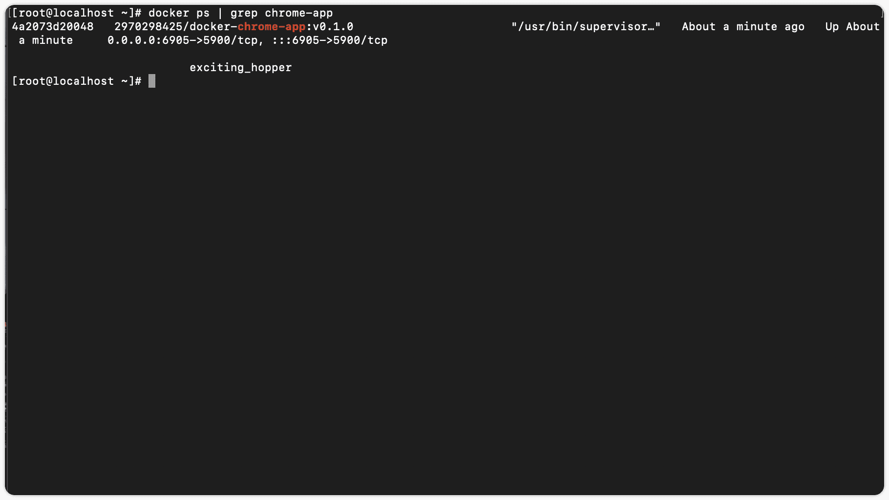
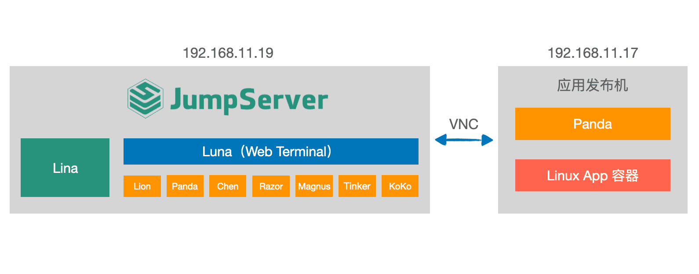
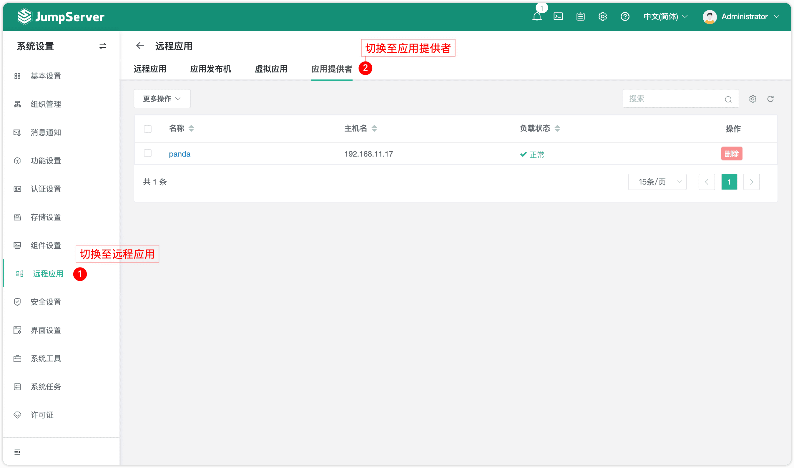
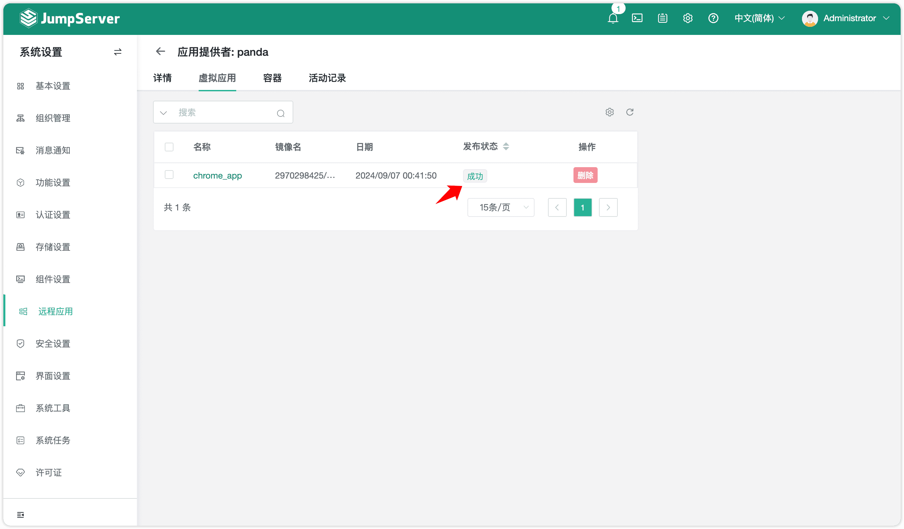
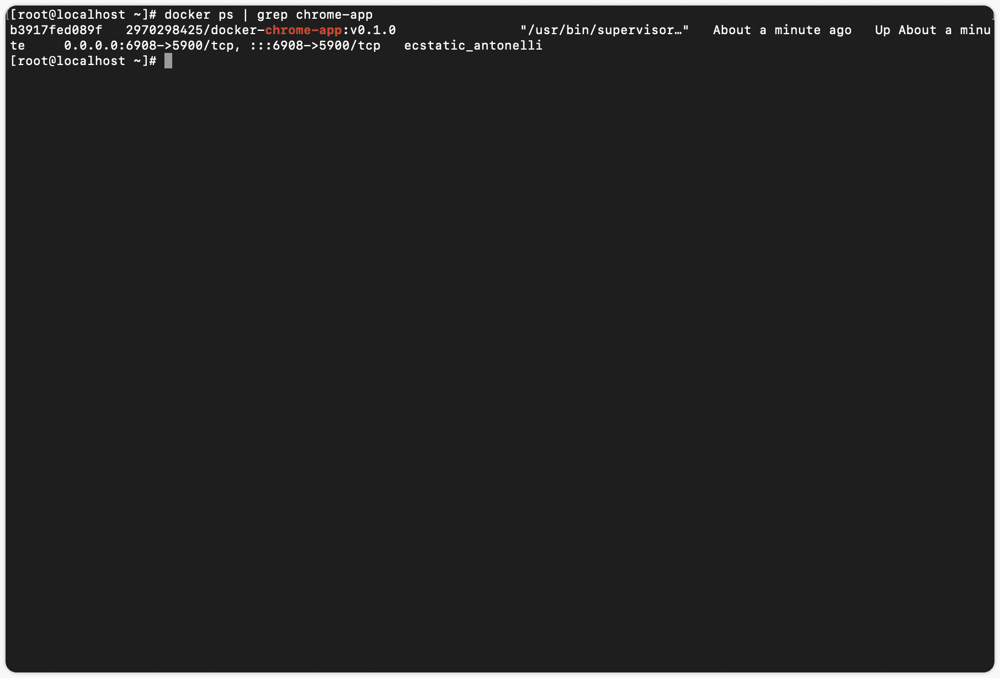

随着企业数字化转型进程的深入，企业对IT系统的安全性要求越来越高，需要对用户的访问和操作进行严格的管控和审计。Linux操作系统凭借其卓越的稳定性、高度的安全性和开源的特性，一直以来都是企业服务器的首选。而Windows Server也以其广泛的应用兼容性和丰富的功能在企业实际应用中占据着重要地位。
JumpServer开源堡垒机同时支持使用Windows Server和Linux作为应用发布机，为企业提供了更加灵活多样的选择，从而全面满足企业应用虚拟化、信创国产化等不同的使用场景。
本文将重点介绍JumpServer基于Linux操作系统发布虚拟应用的具体方法，旨在为企业提供切实可行的解决方案，有效管理和控制对虚拟应用的访问，助力企业提升IT管理的效率与安全性，从而更好地适应数字化时代的发展需求。
一、概述
JumpServer开源堡垒机支持应用发布功能，管理员通过应用发布功能可以将各种应用通过JumpServer进行集中发布和管理，进而实现安全、便捷的应用访问。JumpServer的应用发布主要分为远程应用和虚拟应用，具体区别如下：
■ 远程应用：基于Windows Server的应用发布方式。流畅度最高，需要额外配置Windows Server，并购买Microsoft RDS CALs（即用户登录授权）；
■ 虚拟应用：基于Linux操作系统的应用发布方式。流畅性适中，兼容性好，支持CentOS、RedHat、麒麟Kylin、openEuler等操作系统。
以下主要介绍JumpServer基于Linux操作系统发布虚拟应用的具体操作流程。
二、虚拟应用技术原理
基于Linux操作系统的应用发布机采用容器化技术，应用程序与其依赖项隔离在独立的运行环境中，通过JumpServer提供的Panda组件，实现对虚拟应用的调度和管理。
具体流程如下：
1. 用户通过访问JumpServer的Web Terminal，连接虚拟应用资产；
2. Panda组件创建基于VNC的GUI容器，并返回该VNC的连接信息至Lion组件；
3. Lion组件创建容器请求，并通过VNC协议连接该容器。

▲图1 虚拟应用技术原理图三、虚拟应用部署方案
■ 方案一：一体化部署方案
一台虚拟机同时部署JumpServer和虚拟应用服务。将部署JumpServer的服务器自身当做虚拟应用发布机使用，用户在使用虚拟应用时，JumpServer的Panda组件启动App容器承载虚拟应用。

▲图2 一体化部署方案原理图具体操作步骤如下：
1. 配置主配置文件
在JumpServer的主配置文件中新增如下参数，主配置文件的路径为：/opt/jumpserver/config/config.txt，具体代码如下：
# 是否启用 Panda 容器，默认值为 1
PANDA_ENABLED=1
# core 组件启用 VIRTUAL_APP 参数
VIRTUAL_APP_ENABLED=1
# panda 组件需要启动的虚拟应用容器主机暴露的 IP 地址(此处填写部署 JumpServer 服务器的 IP 地址即可)
PANDA_HOST_IP=192.168.11.11
# lion 组件需要的 panda 连接地址
PANDA_HOST=http://panda:9001重启JumpServer服务，使主配置文件生效，具体代码如下：
[root@localhost ~]# jmsctl restart2. 开启虚拟应用功能
在JumpServer中依次选择“控制台”→“系统设置”→“功能设置”，在“虚拟应用”标签页中开启“启用虚拟应用”按钮；

▲图3 开启虚拟应用功能开启虚拟应用功能后，在JumpServer中依次选择“控制台”→“系统设置”→“远程应用”，可以看到“虚拟应用”和“应用提供者”标签页；
▲图4 “应用提供者”标签页
3. 下载并上传虚拟应用
前往飞致云应用商店（https://apps.fit2cloud.com/jumpserver）下载虚拟应用至本地。自定义应用可参考官方文档（https://docs.jumpserver.org/zh/v3/guide/system/remoteapp/#34）；
▲图5 JumpServer应用商店虚拟应用列表
以Chrome浏览器应用为例，在JumpServer中依次选择“控制台”→“系统设置”→“远程应用”→“虚拟应用”，在“虚拟应用”标签页中，上传Chrome浏览器虚拟应用。系统将自动同步该虚拟应用配置的镜像，内网环境请联系技术人员获取虚拟应用的镜像包；
▲图6 上传虚拟应用
在JumpServer中依次选择“控制台”→“系统设置”→“远程应用”→“应用提供者”，在“虚拟应用”标签页中可以看到应用已发布成功；
▲图7 成功发布虚拟应用
4. 添加Web资产并授权
在JumpServer中依次选择“控制台”→“资产管理”→“资产列表”→“Web”，添加Web资产；
▲图8 添加Web资产
在JumpServer“控制台”的“权限管理”页面中，添加资产授权；
▲图9 添加资产授权
5. 使用虚拟应用
进入JumpServer的Web Terminal页面，使用虚拟应用连接资产；

▲图10 使用虚拟应用连接资产
▲图11 连接资产此时，JumpServer服务启动App容器以承载虚拟应用：2970298425/docker-chrome-app:v0.1.0（说明：此容器镜像为虚拟应用的镜像包）。

▲图12 JumpServer服务启动App容器承载虚拟应用■ 方案二：发布机外置部署方案
通过使用外置的应用发布机来部署使用虚拟应用。用户在使用虚拟应用时，外置的JumpServer的Panda组件启动App容器以承载虚拟应用。

▲图13 发布机外置部署方案原理图具体操作步骤如下：
1. 配置主配置文件
在JumpServer的主配置文件中新增如下参数，主配置文件的路径为：/opt/jumpserver/config/config.txt，具体代码如下：
# 是否启用 Panda 容器，默认值为 1
PANDA_ENABLED=0
# lion 组件需要的 panda 连接地址（填写外置应用发布机的 IP 地址）
PANDA_HOST=http://192.168.11.17:9001重启JumpServer服务，使主配置文件生效，具体代码如下：
[root@localhost ~]# jmsctl restart2. 在应用发布机上部署Panda组件
在应用发布机上解压JumpServer安装包，并安装docker、docker-compose，加载镜像，具体代码如下：
#解压JumpServer安装包
[root@panda ~]# tar xzvf jumpserver-offline-release-v3.10.13-amd64.tar.gz -C /opt
#使用内置脚本一键安装 docker 和 docker-compose
[root@panda ~]# cd /opt/jumpserver-offline-release-v3.10.13-amd64/scripts
[root@panda scripts]# ./2_install_docker.sh
#加载 Panda 组件镜像
[root@panda scripts]# cd images
[root@panda images]# docker load -i panda:v3.10.13.tar启动Panda组件，具体代码如下：
[root@panda ~]# mkdir -p /data/jumpserver/panda/data
[root@panda ~]# mkdir -p panda
[root@panda ~]# cd panda
[root@panda panda]# cat docker-compose.yaml
version: '2.4'
services:
panda:
image: registry.fit2cloud.com/jumpserver/panda:v3.10.13
container_name: jms_panda
hostname: jms_panda
ulimits:
core: 0
restart: always
ports:
- 9001:9001
tty: true
environment:
- BOOTSTRAP_TOKEN=YmEyNTRkNTYtNDIyMi02OTJm
- CORE_HOST=http://192.168.11.19
- NAME=panda
- PANDA_HOST_IP=192.168.11.17
- IGNORE_VERIFY_CERTS=True #跳过https证书验证
volumes:
- /data/jumpserver/panda/data:/opt/panda/data
- /var/run/docker.sock:/var/run/docker.sock:z
healthcheck:
test: "curl -fsL http://localhost:9001/panda/health/ > /dev/null"
interval: 10s
timeout: 5s
retries: 3
start_period: 10s
# 启动panda
[root@panda panda]# docker-compose up -d注意，docker-compose.yaml中关键参数的释义如下：
BOOTSTRAP_TOKEN：在JumpServer主配置文件中获取（192.168.11.19 中的/opt/jumpserver/config/config.txt）；
CORE_HOST：JumpServer Core组件所在主机的IP地址；
PANDA_HOST_IP：当前Panda组件所在主机的IP地址。
3. 开启虚拟应用功能
在JumpServer中依次选择“控制台”→“系统设置”→“功能设置”，在“虚拟应用”标签页中开启“启用虚拟应用”按钮；
▲图14 开启虚拟应用功能
开启虚拟应用功能后，在JumpServer中依次选择“控制台”→“系统设置”→“远程应用”，可以看到“虚拟应用”和“应用提供者”标签页；

▲图15 “应用提供者”标签页4. 下载并上传虚拟应用
前往飞致云应用商店（https://apps.fit2cloud.com/jumpserver）下载虚拟应用至本地。自定义应用可参考官方文档（https://docs.jumpserver.org/zh/v3/guide/system/remoteapp/#34）；
▲图16 JumpServer应用商店虚拟应用列表
以Chrome浏览器应用为例，在JumpServer中依次选择“控制台”→“系统设置”→“远程应用”→“虚拟应用”，在“虚拟应用”标签页中，上传Chrome浏览器虚拟应用。系统将自动同步该虚拟应用配置的镜像，内网环境请联系技术人员获取虚拟应用的镜像包；
▲图17 上传虚拟应用
在JumpServer中依次选择“控制台”→“系统设置”→“远程应用”→“应用提供者”，在“虚拟应用”标签页中可以看到应用已发布成功；

▲图18 成功发布虚拟应用5. 添加Web资产并授权
在JumpServer中依次选择“控制台”→“资产管理”→“资产列表”→“Web”，添加Web资产；
▲图19 添加Web资产
在JumpServer“控制台”的“权限管理”页面中，添加资产授权；
▲图20 添加资产授权
6. 使用虚拟应用
进入JumpServer的Web Terminal页面，使用虚拟应用连接资产；
▲图21 使用虚拟应用连接资产
▲图22 连接资产
此时，JumpServer服务启动App容器以承载虚拟应用：2970298425/docker-chrome-app:v0.1.0（说明：此容器镜像为虚拟应用的镜像包）。

▲图23 JumpServer服务启动App容器承载虚拟应用